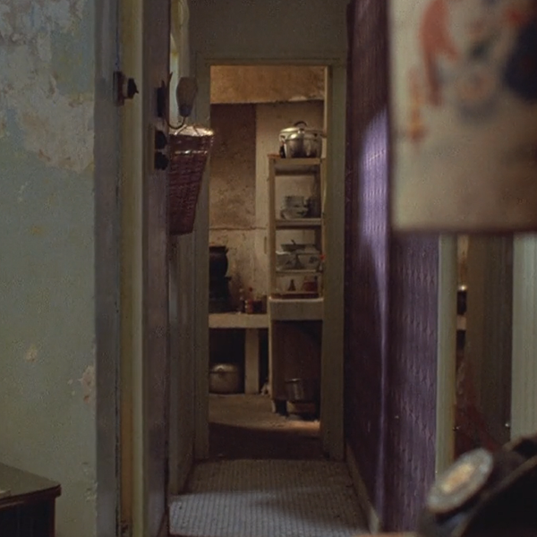
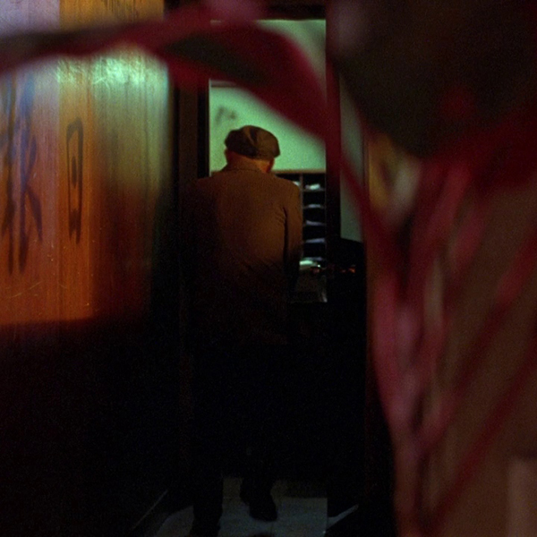
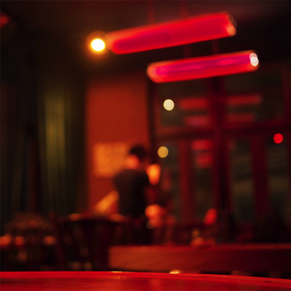
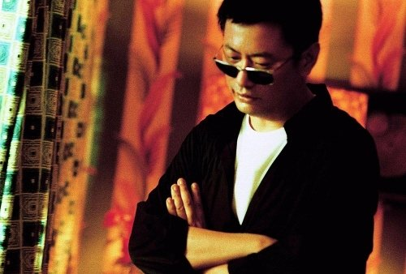
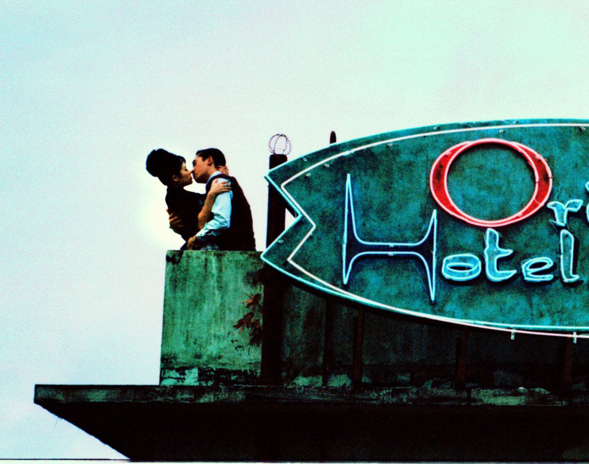
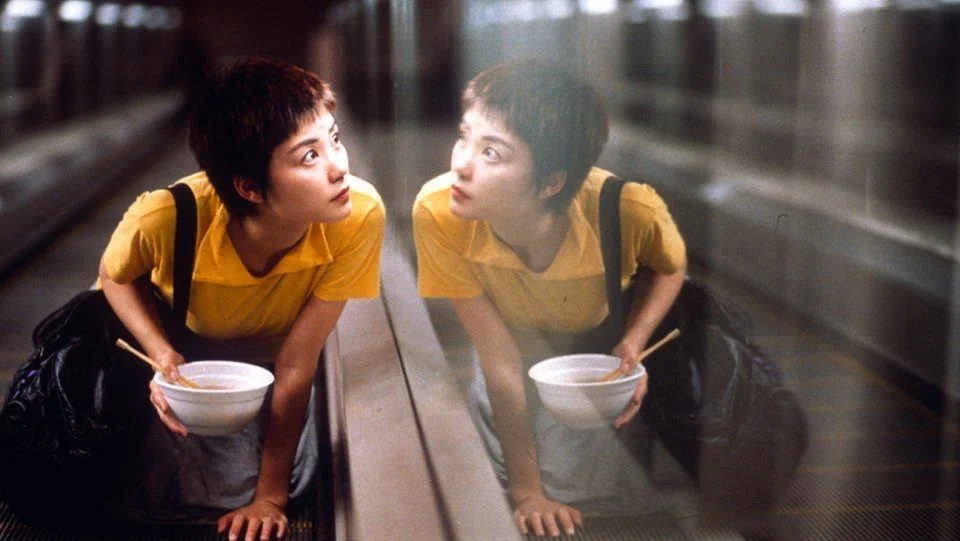
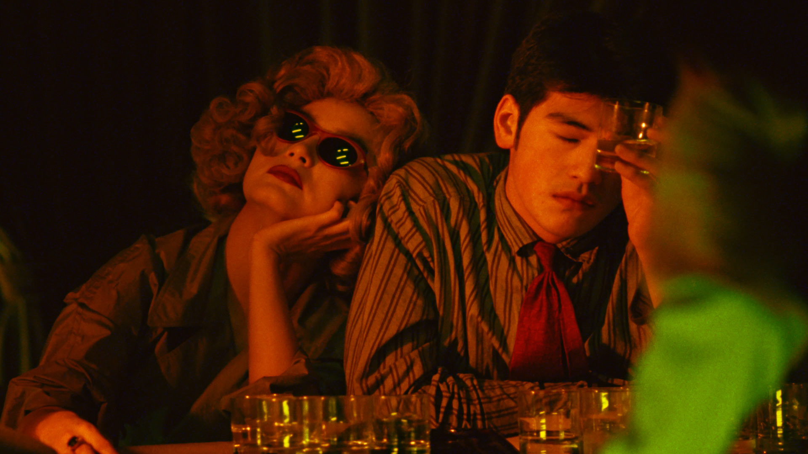
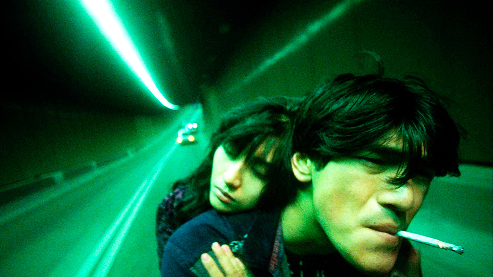
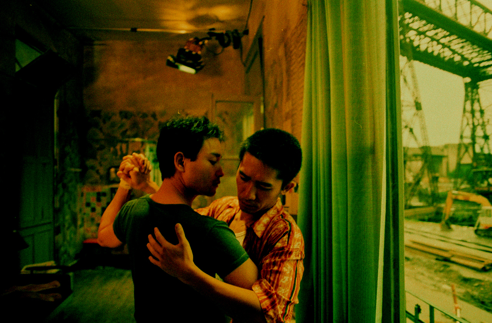
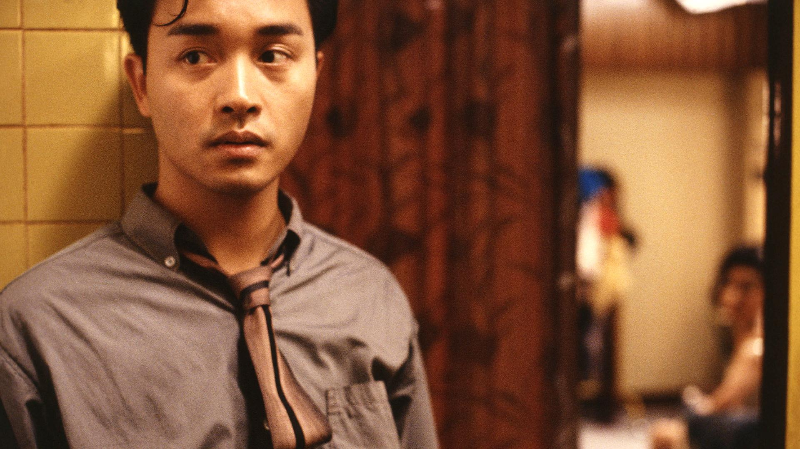

About
Storyline
Set in Hong Kong, 1962, Chow Mo-Wan is a newspaper editor who moves into a new building with his wife. At the same time, Su Li-zhen, a beautiful secretary and her executive husband also move in to the crowded building. With their spouses often away, Chow and Li-zhen spend most of their time together as friends. They have everything in common from noodle shops to martial arts. Soon, they are shocked to discover that their spouses are having an affair. Hurt and angry, they find comfort in their growing friendship even as they resolve not to be like their unfaithful mates.
Reception
Peter Travers of Rolling Stone wrote that "In the hands of a hack, In the Mood for Love could have been a snickering sex farce. In the hands of Wong Kar-wai ... the film is alive with delicacy and feeling". Peter Walker of The Guardian, describing it as his "favourite film", wrote that it provides "profound and moving reflections on life's fundamentals. It's a film about, yes, love; but also betrayal, loss, missed opportunities, memory, the brutality of time's passage, loneliness—the list goes on". David Parkinson of Empire awarded the film five out of five stars, writing that "the performances are masterly, and the photography beautiful. It's a genuinely romantic romance and makes for sublime cinema."
Development
In the Mood for Love went through a long gestation period. In the 1990s, Wong Kar-wai found some commercial success, much critical acclaim, and wide influence on other filmmakers throughout Asia and the world with films such as Chungking Express and Fallen Angels, both set in present-day Hong Kong. His 1997 film Happy Together was also successful internationally, winning him Best Director at the Cannes Film Festival and surprising many. It was even popular with mainstream audiences in Hong Kong, despite its then-unusual focus on a gay love story and its having been largely improvised in Argentina, a landscape unfamiliar to Wong.
- 
- 
- 
Director
Wong Kar-wai (born 17 July 1958) is a Hong Kong film director, screenwriter, and producer. His films are characterised by nonlinear narratives, atmospheric music, and vivid cinematography involving bold, saturated colours. A pivotal figure of Hong Kong cinema, Wong is considered a contemporary auteur, and ranks third on Sight & Sound's 2002 poll of the greatest filmmakers of modern times. His films frequently appear on best-of lists domestically and internationally.
- 
- 
- 
- 
- 
- 